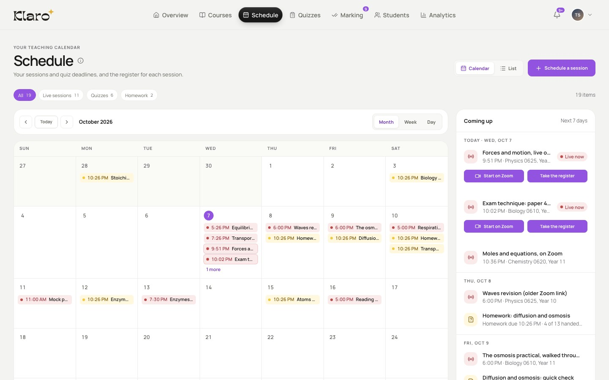

Teach on Zoom from your schedule
Afterwards the recording lands in your course, cut into clips and linked to your book.
About live sessions
- Your live class is on your schedule. Start it on Zoom from here.
- Afterwards, the recording lands in your course…
- …cut into clips, each one linked to your book.
- One tap on “In the book” and the book opens at the part you explained.